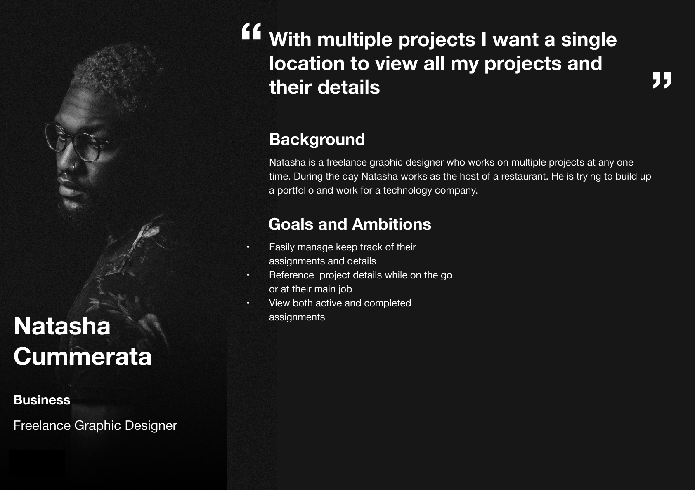
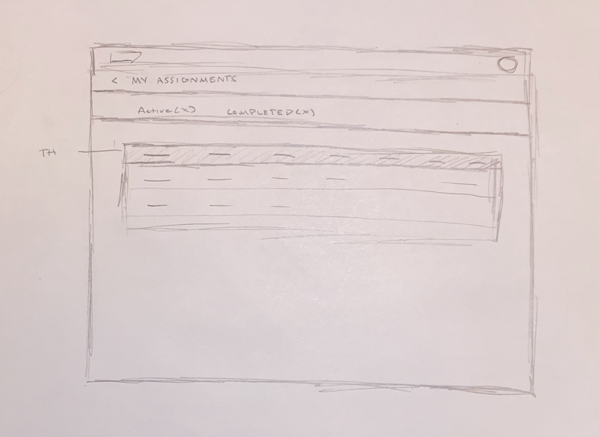

SAP Fieldglass Talent Network
Designing flows for react-responsive website application
Background
Fieldglass Talent Network is a responsive website set to release November 2021. It was created to accomodate for the growing gig worker economy and allows companies to search within a new portal for independent contractors or freelancers.
My Role
Design a flow where workers will be able to view all of their assignments (jobs).
Requirements
• Workers need to be able to view their assignments
• Workers need to be able to access their assignments from the home page of the application.
• Workers should be able to exit FTN and enter the Fieldglass.net to view details related to their assignments
• Mobile and desktop designs should adhere to Fiori design guidelines
Research
With limited time and resources I was not able to speak to actual users for this project. However, I did as much research as I could online to learn more about the nature of freelance work and here is what I found...
- With the rise of digital platforms freelance work is becoming more popular
- Projects can often be short term
- Gig workers often have more flexible schedules and in some cases can set their own hours or work from home
- It is estimated that gig worker's size, which covers independent or non-conventional workers, is 20% to 30% of the economically active population in the United States and Europe.
This information was helpful, but I still had some questions before jumping into the design. I reached out to the product manager who helped me brainstorm how we may handle certain use cases.
- If projects are often short term...how will we handle completed projects?
- Do workers have a need to view their completed assignments?
- Of all the details related to different projects what are the three most important to workers?
Analysis
In an attempt to better understand the information I found online and answer some of the questions I had come up with, I created a persona to better understand the wants, needs, and motivations of the users I would eventually be designing for. Understanding these things would help me make more effective design decisions.
Design
With a more clear understanding of the motivations it was time to move into the actual design.
Because this was a responsive site… It would be important to focus on mobile first and only include the most necessary information. Based on the answer to my question above, the name period and ID
Also I had to figure out how to display a list of assignments and account for cases where a worker could have more than 50.
Sketches
Design decision one - Separate active and completed assignments. I decided to separate the active and completed assignments using tabs. In doing this, it prioritizes the active assignments (which workers care more about) while still allowing them to reference completed assignments if they need.
This could function similarly to email where you can access your archives but are more interested in the most recent messages.

Design Decision 2 - Showing the active and completed assignments on the tile upfront. This shows the status of their work without forcing them to enter the workflow.
Design Decision 3 - Progressive disclosure. Only showing the most necessary information and allowing the user to view more if necessary.
Design decision 4 - scaling up to desktop. Using a table design could grow in width to allow more columns and information to be displayed depending on the size of the screen. Show/hide in HTML.
Mockups
Using Figma I brought the ideas to life and created mockups which illustrated the fine details. Another design decision I made during the mockup creation was to show some sort of visual on the tile to see how many active and completed assignments the worker has. This would allow them to view their assignments without having to enter the workflow.
Prototype
Here you can view the interactive prototype. Click on the top right corner to enlarge the iframe.